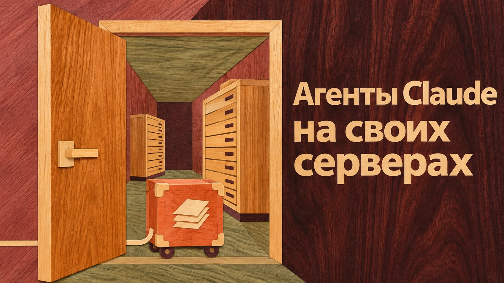

Новости ИИ
Новые модели, исследования, продукты и события индустрии искусственного интеллекта.
24 ноября 2026

Google устроила научные конференции для нейросетей
Команды ИИ-агентов Gemini на виртуальных конференциях совместно улучшали алгоритмы для квантовых компьютеров, а корректность решений проверяли математически.

Amazon и eBay требуют убрать ИИ-игрушки с продажи до Рождества
Более 155 организаций и экспертов призвали Amazon и eBay остановить продажу игрушек с генеративными чат-ботами для детей младше 16 лет до независимой проверки безопасности.

Поисковик Google теперь сможет заглянуть в ваш кошелёк
Google начала подключать Wallet к AI Mode: поисковый ИИ с разрешения пользователя сможет анализировать расходы и бонусы банковских карт. Доступ только на чтение.

GPT-6.2 наконец добралась до обычного ChatGPT
OpenAI начала развёртывание GPT-6.2 в обычном ChatGPT на Plus, Pro, Business и Enterprise. В основе — адаптированная GPT-6.2 Sol.

Возвращение Хуанга подняло стоимость NVIDIA почти на триллион долларов за день
Акции NVIDIA выросли на 31,48% по итогам торгов 23 ноября после возвращения Дженсена Хуанга. Капитализация увеличилась примерно на $952 млрд.

Anthropic разрешила компаниям поселить ИИ-агентов Claude на своих серверах
Anthropic открыла закрытую бету самостоятельного размещения инфраструктуры Claude Managed Agents. Управление и история агентов могут работать на серверах клиента, а модель остаётся у внешнего провайдера.

Для ИИ придумали 2206 мер защиты. Контроль над агентами почти забыли
Исследователи MIT собрали 2206 предложенных мер безопасности ИИ из 47 документов. На человеческий контроль автономных агентов приходится лишь 1,4% рекомендаций.

Компания бывшего главы «Яндекса» замахнулась на $45 млрд, но стройка для Microsoft уже буксует
Nebius Аркадия Воложа планирует капитальные расходы $40–45 млрд на ИИ-инфраструктуру в 2027 году. При этом дата-центр для Microsoft в Нью-Джерси отстаёт от графика.
23 ноября 2026

В Китае открыли биржу нейросетей. Уже 50 миллионов запросов в день
Baidu представила Token Exchange, площадку для сравнения и покупки доступа к ИИ-моделям. Компания заявляет о 50 млн обращений в день и более 100 предложениях.

403 дата-центра США загрязняют атмосферу как целая Дания. Greenpeace взялась за NVIDIA
Исследователи оценили выбросы 403 американских дата-центров в 25,7 млн тонн CO₂ за год. Greenpeace отдельно сообщила о росте выбросов в цепочке поставок NVIDIA на 725% с 2020 года.

Хуанга вернули в NVIDIA через 11 дней после скандальной отставки, хотя совет директоров был против
NVIDIA восстановила Дженсена Хуанга на посту гендиректора спустя 11 дней после отставки, вызванной скандалом с подозрениями в иностранном разведывательном вмешательстве.

Сценарист «Таксиста» попросил ИИ написать фильм в его стиле и испугался результата
Пол Шредер рассказал, что нейросеть быстро подготовила сценарий в его стиле и напугала его точностью подражания. Теперь режиссёр планирует использовать ИИ-студию Fable для сцен нового хоррора.

Главный учёный OpenAI предложил притормозить гонку ИИ, и Альтман согласился
Главный учёный OpenAI Якуб Пахоцкий предложил разработчикам согласовать пределы развития ИИ, преодолеваемые после выполнения конкретных требований безопасности. Сэм Альтман поддержал идею.

В Южной Корее министр лишился должности из-за паники вокруг ИИ-шпаргалок
Министр образования Южной Кореи ушёл в отставку после резких изменений правил главного вступительного экзамена на фоне опасений списывания с помощью ИИ.
ИИ-программист случайно выложил секретный ключ в интернет, и хакер скачал чужие запросы к нейросетям
ИИ-агент Together AI опубликовал в публичном GitHub секретный ключ. Посторонний скачал хранившиеся образцы клиентских запросов и проверял обнаруженные в них ключи.

Ваши секреты из чатов с ИИ могли попасть к хакерам: OpenRouter отключила трёх поставщиков
OpenRouter отключила трёх поставщиков ИИ после расследования Dragos: тестовые запросы с подставными секретами выявили утечки, а 125 точек доступа лишились статуса Zero Data Retention.

Хакер дал ИИ одну команду, и тот нашёл неизвестную дыру за 11 минут
Amazon раскрыла атаку на университетские серверы: ИИ-агенты нашли уязвимость MONAI Label за 11 минут, а затем получили права root. Разработчики закрыли ошибку в версии 0.8.6.

Google доверила Безосу запуск космических ИИ-серверов после испытания с Маском
Google заключила соглашение с Blue Origin о запуске спутников Project Suncatcher на New Glenn в первом квартале 2029 года. Каждый аппарат получит вычислительные мощности масштаба серверной стойки.

Google научила ИИ делать Android-приложения, которые вас помнят
Google AI Studio получила интеграцию Firebase для Android-приложений: облачное хранение, вход через Google и защищённый доступ к Gemini. Установка через личную библиотеку Google Play доступна в США.

Canva добавила кнопку «Выключить ИИ»
Canva представила настройки AI Controls: на Free и Pro можно отключить генеративные инструменты и уменьшить количество ИИ-картинок в поиске. Некоторые средства редактирования продолжат работать.